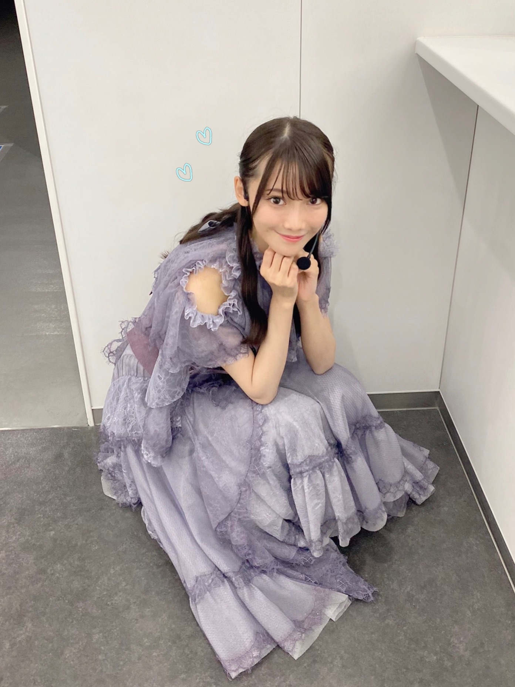
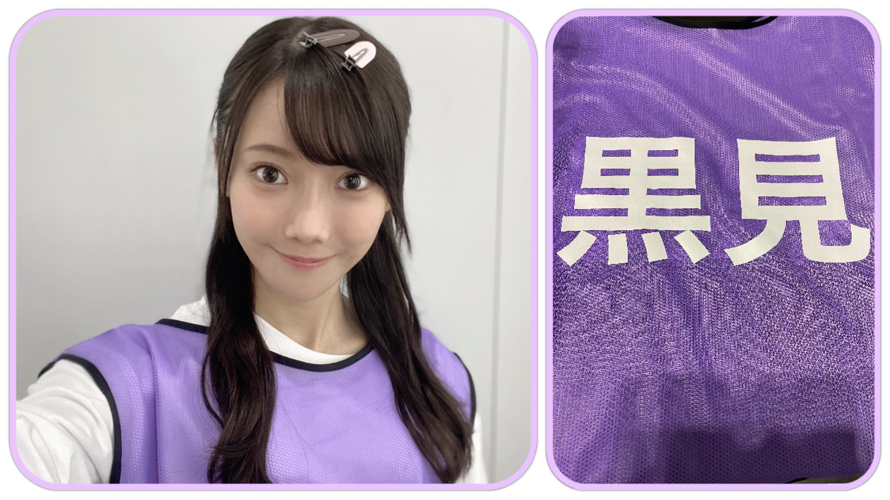
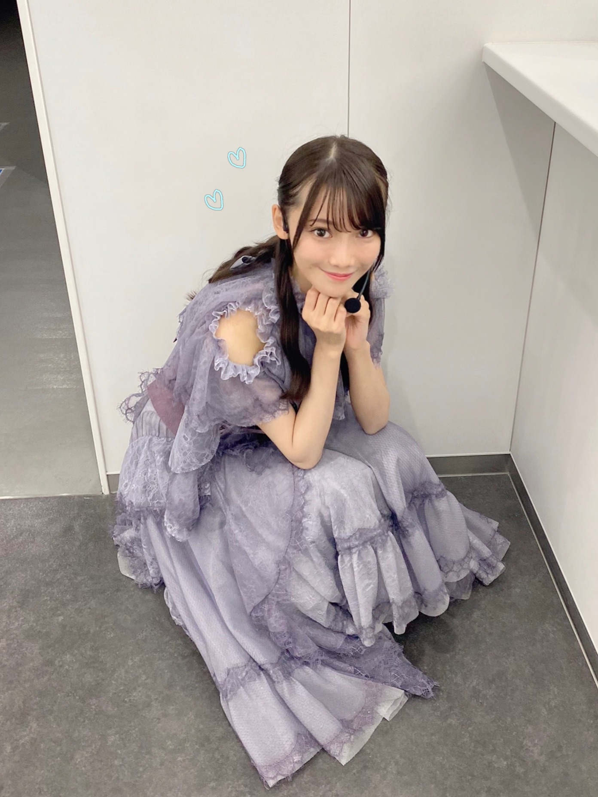
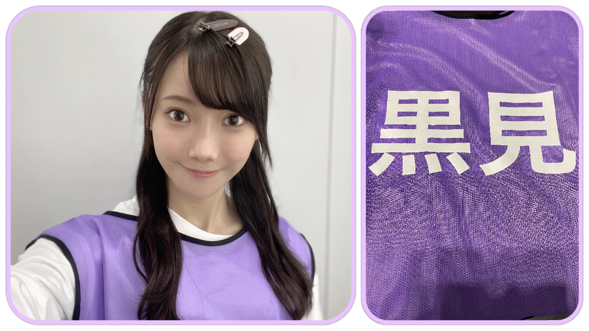

2020/1029Thu『さよならをありがとう。』 ☺︎ 黒見明香(16)
大切な一日。
乃木坂46 新４期生の黒見明香です。
すこーしだけ自己紹介させてください✨
♪:*:･･:*:･･:*:･･:*:･･:*:･･:*:･♪:*:･･:*:･･:*:･･:*:･･:*:･･:*:･♪
黒見 明香（くろみ はるか）
2004年1月19日生まれ 16才
香港生まれ・東京都出身です
あだ名： くろみん・黒見ちゃん
3の倍数9・6・3(くろみ)
と覚えてもらえたら嬉しいです♪
♪:*:･･:*:･･:*:･･:*:･･:*:･･:*:･♪:*:･･:*:･･:*:･･:*:･･:*:･･:*:･♪


-:-:୨୧:-:- 初めての乃木坂カラーのビブス✨
ブログやお手紙で、たくさんのコメントや感想送って下さり
本当にありがとうございます✩︎⡱
今回、初めてコメントしました！というあなたも、
こないだの続きだよー！と教えて下さるあなたも、
大切な時間を使ってお話しして下さり
本当にありがとうございます✨
あなたに出逢えた奇跡に、感謝しながら、
大事に、一つずつ全部読ませて頂いています((〃ω〃))
皆さんのことを知ることが出来る、
私の１日の中で『１番幸せな時間』です♩
明日は、馬車に乗るお姫様 璃果ちゃんですよー♬
読んでくださり、本当にありがとうございます☺︎
次回も、会えたら嬉しいなぁ✨
またねヾ(･ω･*)
くろみはるか☺︎
☆ 本日のあなたのラッキーナンバー：❹ と ❻
♪:*:･･:*:･･:*:･･:*:･･:*:･･:*:･♪:*:･･:*:･･:*:･･:*:･･:*:･･:*:･♪
・
・
・
＜ちょこっとアンコール♬笑＞
そして、お誕生日を迎えるあなたへ・・
✨HAPPY BIRTHDAY✨
どうぞ素敵な一年になりますよう✩︎⡱
♪:*:･･:*:･･:*:･･:*:･･:*:･･:*:･♪:*:･･:*:･･:*:･･:*:･･:*:･･:*:･♪
ここまで読んでくださったアナタ、ほんとうにありがとう♡
またねヾ(･ω･*)
白石麻衣さんの卒業コンサート
『乃木坂46 NOGIZAKA46 Mai Shiraishi Graduation Concert 〜Always beside you〜』
本当にありがとうございました。
♬ *。♩*。♬
余韻の覚めない中、
ココを 見てくださり ありがとうございます☺︎
乃木坂46 新４期生の黒見明香です。
すこーしだけ自己紹介させてください✨
♪:*:･･:*:･･:*:･･:*:･･:*:･･:*:･♪:*:･･:*:･･:*:･･:*:･･:*:･･:*:･♪
黒見 明香（くろみ はるか）
2004年1月19日生まれ 16才
香港生まれ・東京都出身です
あだ名： くろみん・黒見ちゃん
3の倍数9・6・3(くろみ)
と覚えてもらえたら嬉しいです♪
♪:*:･･:*:･･:*:･･:*:･･:*:･･:*:･♪:*:･･:*:･･:*:･･:*:･･:*:･･:*:･♪

-:-:୨୧:-:- 乃木坂カラーの 白石麻衣さん♡にとって最後の歌衣装、そして私に取って初めての歌衣装...
開演前、キャプテンの真夏さんに代わって
白石さんが 円陣の「掛け声」をかけて下さいました。
みんな大好きな、大好きな白石麻衣さん・・・
リハーサルから、涙しちゃうメンバーも多く
こみあげる想いを必死で抑えながら
笑顔になろうと頑張っていました。
＊
白石さんが、最後に、
『９年間、楽しい思い出ばかりで、
こんな幸せでいいのかなと思う...』
と、お話しして下さいました... ｡ﾟ(｡ﾉω＼｡)ﾟ｡
嬉しいことも辛いことも、共に乗り越えてきて下さった
大好きな先輩方、支えて下さったたくさんのスタッフの皆さま、
そして
応援して下さり、力になって支えて下さった
大切なファンの皆さま。
＊
最後の1日を、大切な先輩の卒業式を
一緒に見届けて下さり
本当にありがとうございました。
♪:*:･･:*:･･:*:･･:*:･･:*:･･:*:･♪:*:･･:*:･･:*:･･:*:･･:*:･･:*:･♪

-:-:୨୧:-:- 「世界で一番孤独なLover」で着せて頂いた、大切な深紅の衣装です
キャプテンの真夏さん♡は
いっぱい、いっぱい、自分の涙を我慢して、
『みんなで声出して、盛り上げていこうねーっ！』
と明るく笑顔で、メンバーを激励し、お話してくれました...
＊
本番当日も、ギリギリまで、
白石さんと真夏さんのお二人が
「ちょっとやめてよー♡」といつもどおりの、
可愛く仲良くお話しされていらっしゃるお姿にも、
"やっぱ乃木坂だな"と、なんだか胸がジーンとしてしまいました...\\\
＊
ガールズルールでは
送ってくださった皆さんの掛け声と一緒に、
全員で笑顔で✨本編を終えることが出来て、
直接会場で会うことは叶わなくても、
皆さんのパワーを、お姿をいっぱい感じて、
本当に幸せでした。応援ありがとうございます。
♬ *。♩*。♬
楽屋に入っていらっしゃった白石さんが、
たまたま わたしの目の前に
座ってくださいました(*´-`)♡
白石さんご自身で、
心を込め一つ一つ、
９年間の思いをかみしめるように
メイクをされ、準備をされていらっしゃる
凛とした美しいお姿✨に
目を奪われてしまいました。。
＊
一人、勇気をふりしぼって、
ご挨拶させて頂いたとき、
柔らかい笑顔で、優しくお話しして頂いたこと、
ずっとずっと忘れません。
大切な想い出です✩︎⡱
＊
これからも、ずっと乃木坂を
私たちの成長を、見守っていて下さる素敵な大好きな方です。
＊
白石さんが、先輩方が連れてきて下さった坂を
これからも、あなたも一緒に、
悩んだり遠回りしたりしながらも、
上ってくれたら嬉しいです(*´-`)
♪:*:･･:*:･･:*:･･:*:･･:*:･･:*:･♪:*:･･:*:･･:*:･･:*:･･:*:･･:*:･♪

-:-:୨୧:-:- 愛される白石麻衣さん♡の 思い出と愛が詰まっている会場の装飾✩︎⡱
♪:*:･･:*:･･:*:･･:*:･･:*:･･:*:･♪:*:･･:*:･･:*:･･:*:･･:*:･･:*:･♪
-:-:୨୧:-:- 愛される白石麻衣さん♡の 思い出と愛が詰まっている会場の装飾✩︎⡱
長いたくさんの歴史の、最後の年に、
ご一緒させていただけたこと、
一生忘れません。。。
会場のホールにも、お花にも、
白石麻衣さんを応援する皆さんからの
愛がたくさん、たくさん溢れていました (*ˊᵕˋ*)੭
＊
わたし自身は、白石さんの優しいお顔を見て、
泣かないよう...笑顔がぎこちなくなっていたり...
たくさんの反省があります。。。
＊
それでも、乃木坂のメンバーとして
教えて頂いた大切なこと
先輩たちが見せて下さった美しいお姿、
ひたむきさ、努力、感謝、そして笑顔・・・
必ず、大切な乃木坂に、少しでも役立てる人となれるよう
教えに生かして、精一杯努めます (. ≧ω≦)ﾉ
♬ *。♩*。♬
⚫︎笑顔で見送ってあげてください。私もパソコンの前で見送ります！！
⚫︎らじらーで徳井さんが言ってた「卒業は何かの入学」というのを参考に、これからの活躍を応援。
⚫︎らじらーで徳井さんが言ってた「卒業は何かの入学」というのを参考に、これからの活躍を応援。
ステップアップなんだよ、夢を叶えて旅立つんだよ、ジコチューのように「人生はあっという間だ！」なんだよ・・・と、コメントで励ましやアドバイスたくさん教えてくださって本当にありがとうございます。
一つ一つ大切に、胸に刻んで、
今、寂しい気持ちを奮い立たせています><
⚫︎乃木坂工事中で中田花奈さんがボードに「くろみ」って書いてくれたね！凄いね！
⚫︎お二人は、今後も芸能活動されるみたいですので、またご一緒出来たら良いですね。
花奈さんの解答びっくりしました！((〃ω〃))
そして嬉しくて、
しばらく動けなかったです。。。
"乃木坂をよろしくね(・ωｰ)" と冗談まじりに、
掛けてくださった言葉を、何度も何度も思い出しています。
＊
いつの日か、またご一緒させていただける日が来るよう
わたしも全力で頑張らなくちゃですね！
寂しいですが・・・
ご卒業おめでとうございます✨
白石麻衣さん♡中田花奈さん♡ お二人のこれからが
幸せあふれる楽しい毎日でありますように (*ˊᵕˋ*)੭
♪:*:･･:*:･･:*:･･:*:･･:*:･･:*:･♪:*:･･:*:･･:*:･･:*:･･:*:･･:*:･♪

-:-:୨୧:-:- 初めての乃木坂カラーのビブス✨
今月の 「TOKYO IDOL FESTIVAL オンライン2020」そして
「乃木坂46 NOGIZAKA46 Mai Shiraishi Graduation Concert
〜Always beside you〜」
と、練習するにあたって、
初めての「乃木坂カラーのビブス✨」を
使わせていただきました！
＊
坂道研修生で、初めて"東名阪ツアーをさせて頂ける"と聞いて、
真っ白なビブスを頂いたあの日の感動も、
乃木坂カラーの、いつも映像で見て憧れていた
先輩方とお揃いのビブスを頂いたこの日の感動も、
昨日のことにように、鮮明に覚えています。
＊
新4期の5人で
「うわぁ....((〃ω〃))」と目を見合わせて幸せをかみしめていました。
♬ *。♩*。♬
⚫︎オンラインだけど、見送ることが出来てよかったです！
ライブビューイングのチケットも当てられず、
"あぁ...今頃Overtureかなぁ。。。" と自分が情けなく、
自分の運のなさに、悔し涙した経験を思い出しています。
今も時々、願いを込めながら、息を潜めて、
チケット当落メールを確認する夢を見る日があります...\(//∇//)\
＊
直接ライブで皆さんのお顔を見て
楽曲を伝える、一緒に空間を共有することが出来なくて
とても悔しいけれど,,,
この景色を、表情を
オンラインでたくさんの方に、
お届けできたこと、
白石麻衣さんの卒業する日を
見守っていただけたことを、嬉しく思います☺︎
＊
＊カタカナ苦手な私には、
「ライビュヴーインあるって！」友達に送って
「なんか間違ってるけど、察した」・・・Σ（ﾟдﾟll）
と返された思い出があります\(//∇//)\
『らいぶ・びゅーいんぐ』 難問ですよね！笑
（今、辞書で調べてから書きました汗）
♪:*:･･:*:･･:*:･･:*:･･:*:･･:*:･♪:*:･･:*:･･:*:･･:*:･･:*:･･:*:･♪
【 ノギザカスキッツACT2 】
とってもありがたいことに、
11月10日スタート『２nd シーズン』
放送させて頂くことが決定しましたー！
３期生の先輩方も参戦されてパワーアップです✩︎⡱
⚫︎先輩方を見たら、一緒にお芝居をしたら、また何か「ヒント」になるかもしれないね。
4期生の皆んなで、さすが！先輩方はすごいね✨と
演技力・トーク力と感動していました〜
私たちもパワーアップしなければですね！
楽しんで、頑張るねー (*ˊᵕˋ*)੭
♬ *。♩*。♬
⚫︎「an・an」さんに、来月メンバー皆で登場と聞きました。初の女性誌かな!?
こちらも、嬉しすぎることに、全員登場させていただきます♪
またオフショットなど載せさせてくださいねヾ(･ω･*)o
♪:*:･･:*:･･:*:･･:*:･･:*:･･:*:･♪:*:･･:*:･･:*:･･:*:･･:*:･･:*:･♪
♪:*:･･:*:･･:*:･･:*:･･:*:･･:*:･♪:*:･･:*:･･:*:･･:*:･･:*:･･:*:･♪
ブログやお手紙で、たくさんのコメントや感想送って下さり
本当にありがとうございます✩︎⡱
今回、初めてコメントしました！というあなたも、
こないだの続きだよー！と教えて下さるあなたも、
大切な時間を使ってお話しして下さり
本当にありがとうございます✨
あなたに出逢えた奇跡に、感謝しながら、
大事に、一つずつ全部読ませて頂いています((〃ω〃))
皆さんのことを知ることが出来る、
私の１日の中で『１番幸せな時間』です♩
ー " 夢を見るなら君と一緒がいい " (*´-`)
直接お話しできる時が、 待ち遠しいです✩︎⡱
＊
寝不足が続いたり、すっかり肌寒くなってきちゃって、
なんだか体調イマイチだよー、疲れちゃったよーって方も
本当に、今日も一日 お疲れ様でした✩︎⡱
きっと心も、身体も、しんどい時もあるかと思います。。
どうぞ、皆さんが 少しでも
ひとときリラックスできますように...✩︎⡱
と願っています(*´-`)
初めて会える日を、楽しみに待っています♪
＊
かぼちゃの馬車に乗ってきた奈於ちゃん♡
＊
寝不足が続いたり、すっかり肌寒くなってきちゃって、
なんだか体調イマイチだよー、疲れちゃったよーって方も
本当に、今日も一日 お疲れ様でした✩︎⡱
きっと心も、身体も、しんどい時もあるかと思います。。
どうぞ、皆さんが 少しでも
ひとときリラックスできますように...✩︎⡱
と願っています(*´-`)
初めて会える日を、楽しみに待っています♪
＊
かぼちゃの馬車に乗ってきた奈於ちゃん♡
明日は、馬車に乗るお姫様 璃果ちゃんですよー♬
読んでくださり、本当にありがとうございます☺︎
次回も、会えたら嬉しいなぁ✨
またねヾ(･ω･*)
くろみはるか☺︎
☆ 本日のあなたのラッキーナンバー：❹ と ❻
♪:*:･･:*:･･:*:･･:*:･･:*:･･:*:･♪:*:･･:*:･･:*:･･:*:･･:*:･･:*:･♪
・
・
・
＜ちょこっとアンコール♬笑＞
♬ *。♩*。♬
⚫︎私は櫻坂46新2期生とのエピソードも教えてください。
○ライブ前にも 激励のメッセージを送ってくれて
すごく力になりました！温かい大切な仲間です☺︎
♬ *。♩*。♬
⚫︎和ラーにお湯を入れて、3分待って、ふたをとったら、黒見ちゃんのサインが出てきた。
○嬉しいー (*ˊᵕˋ*)੭
いっぱい召し上がってくださいね✨
♬ *。♩*。♬
⚫︎次回ブログは10月29日。去年なら研修生ツアー初日の前日ですね。
○もう一年ですね。とっても緊張していましたー汗
大沼晶保ちゃんと部屋でドキドキしていました☺︎
♬ *。♩*。♬
♬ *。♩*。♬
⚫︎くろみん勉強頑張って(/･ω･)/あっ、新4期生の中で「おバカキャラ」と聞かれたら、「くろみん」と選んだ子も確か居たよね？（笑）
⚫︎追試はもう終わりましたか？ まだでしたら、がんばってください！
○今日数学のテスト受けてきたよー\(//∇//)\笑
⚫︎追試はもう終わりましたか？ まだでしたら、がんばってください！
○今日数学のテスト受けてきたよー\(//∇//)\笑
頑張ります！ありがとうー☺︎
♬ *。♩*。♬
⚫︎今日はフィンランドのサンタクロースから大切なお知らせがあったよ。
「クリスマスは中止しない」（byサンタ）コロナ渦で心配だったけど、良かったね。くろみん。何をお願いする？プレステ？ステッキのリベンジ？
♬ *。♩*。♬
⚫︎今日はフィンランドのサンタクロースから大切なお知らせがあったよ。
「クリスマスは中止しない」（byサンタ）コロナ渦で心配だったけど、良かったね。くろみん。何をお願いする？プレステ？ステッキのリベンジ？
○本当に良かったです((〃ω〃))
子どもたちも幸せになるといいなー✨
わたしも、こっそり熟考します笑フフ
♬ *。♩*。♬
＜ゲームコーナー☺︎＞
＜ゲームコーナー☺︎＞
⚫︎ プロスピのイベントのキャラバンは余裕があれば
走ったほうがいいと思うよ！
⚪︎キャラバン走ったよ！無事Sランク契約書もらえたよ〜☺︎
⚫︎ 僕は、プロスピでは、エナジーが少なくてあまり引けてない。でもこれから頑張ってエナジーを貯めて頑張るね。
⚪︎うん！エナジー貯めるの時間かかるけど、一緒に頑張ろう！
⚫︎ 黒見ちゃんはアニバーサリーの無料ガチャで誰引いたの？
⚪︎もともと持ってた選手だよー！
今回ので極み＋になったよー☺︎
⚫︎プロスピ、フレンドになって〜
いつかあなたとフレンドになれたらいいなぁ☺︎
フレンドになったら一緒にガチャとか引きたいなぁー！
⚫︎ 月曜日はドラフト会議があったけど、くろみんはチェックした？
⚪︎見たよー！残念ながら指名されなかった選手もこれからも活躍が楽しみだね！あなたはどうだった？
♬ *。♩*。♬
夏目漱石のお話、のぎ動画のコメンタリー観たよ！炭治郎みたいというお話、朗読劇のこと、席替えのエピソード、辛い物のお話、かつ家の感想、先輩方の大切な言葉、BOØWYさんの曲の想い出、Perfumeさん、バンドACID BLACK CHERRYさん、Mrs. GREEN APPLEさんのこと、前髪のお話、深川麻衣さん♡悠理ちゃん♡のこと、聖地巡りのお話、Wピースアレンジ方法、ハロウィンのお話も、蜜香屋さん、思いやりを表す恕・努のお話、麻雀のお話も(奈於ちゃんに教わりたいな☺︎)ありがとうございます！一つ一つ大切に読ませて頂いています。
お仕事やアルバイト、部活が大変だよー！勉強や模試だよー、回復中だよーという方も、大変だよねー！お疲れ様！一緒に頑張ろうねーヾ(･ω･*)o
タオル来たよ！ハロウィン写真申し込んだ！らじらーで気になって来たよー、ファンで良かった書いてくれたお話、じゃあね。の歌詞のこと、かっきーのMCの「みんなまいやんに憧れてオーディションを受けた」というお話も、とても心に滲みています(；ω；)
タオル来たよ！ハロウィン写真申し込んだ！らじらーで気になって来たよー、ファンで良かった書いてくれたお話、じゃあね。の歌詞のこと、かっきーのMCの「みんなまいやんに憧れてオーディションを受けた」というお話も、とても心に滲みています(；ω；)
♬ *。♩*。♬
＜お誕生日おめでとうございます✨＞
◎10月31日金川紗耶ちゃん♡
ダンスが上手で、スタイルも美しく、女性らしいところにも憧れています。
よくダンスを一緒に復習してくれてありがとう☺︎大好きだよー。
◎11月1日は渡辺みり愛さん♡
「わからないことあったら遠慮せずに聞きにおいで」と言ってくださり、後輩からも愛されている心優しく、カッコいい憧れのお姉さんです。
そして、お誕生日を迎えるあなたへ・・
✨HAPPY BIRTHDAY✨
どうぞ素敵な一年になりますよう✩︎⡱
♪:*:･･:*:･･:*:･･:*:･･:*:･･:*:･♪:*:･･:*:･･:*:･･:*:･･:*:･･:*:･♪
ここまで読んでくださったアナタ、ほんとうにありがとう♡
またねヾ(･ω･*)